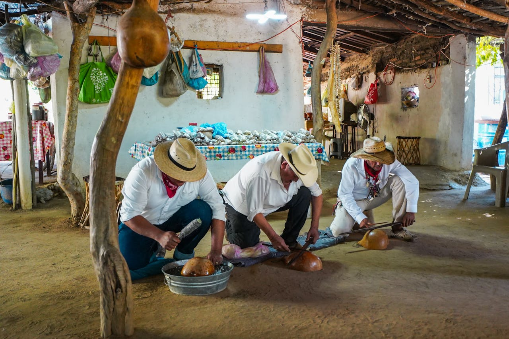

Durante varios días, las jornadas ofrecerán charlas, demostraciones y actividades prácticas pensadas para acercar la artesanía a todos los públicos. El objetivo es visibilizar el valor cultural, económico y social de los oficios manuales.
El programa combina propuestas de artesanos locales con la participación de especialistas invitados. Cerámica, madera, textil, cuero y fabricación digital estarán presentes en un recorrido que conecta tradición e innovación.
La artesanía no es solo una técnica: es una forma de entender el tiempo, los materiales y la relación entre quien crea y quien utiliza el objeto.
Además de las ponencias, el público podrá participar en talleres de iniciación, visitar espacios demostrativos y conocer proyectos que apuestan por la producción local y sostenible.

La organización ha diseñado un programa accesible y diverso, con actividades dirigidas tanto a profesionales como a familias, estudiantes y personas interesadas en descubrir nuevas formas de creación.
Actividades destacadas
- Charlas con artesanos invitados.
- Talleres de cerámica, madera y textil.
- Demostraciones de procesos tradicionales.
- Espacios de encuentro entre creadores y visitantes.